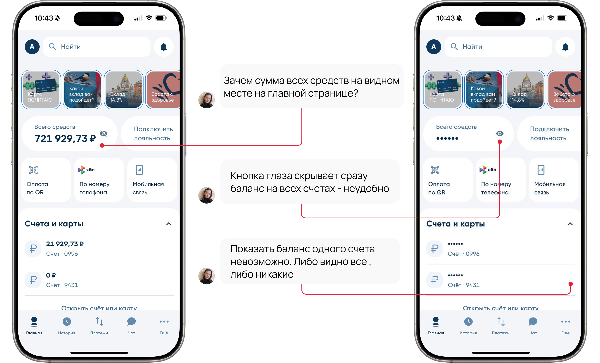
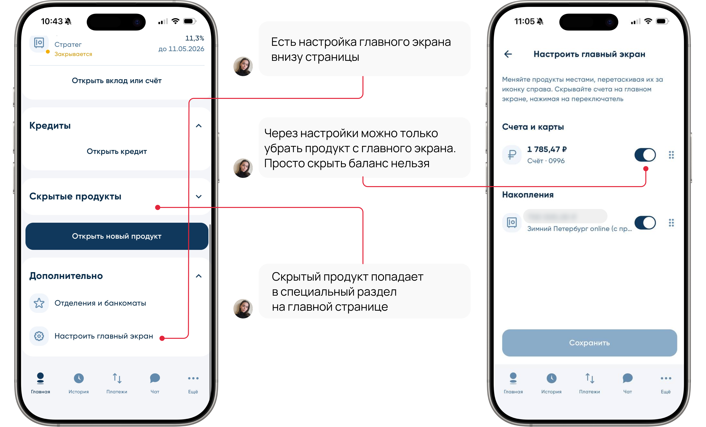
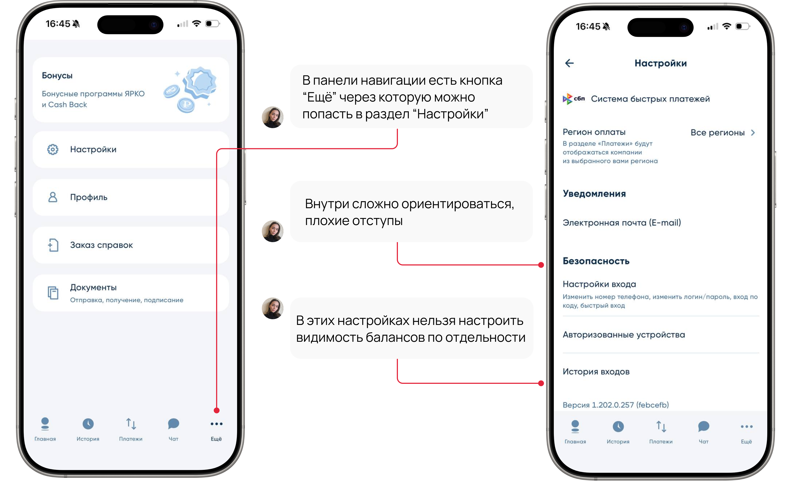
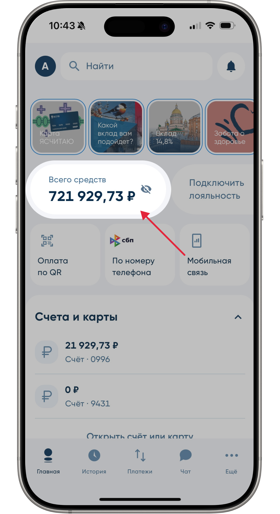
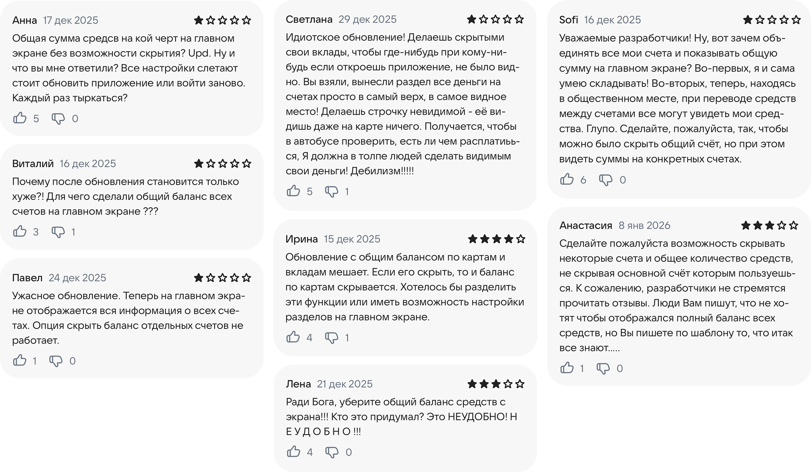
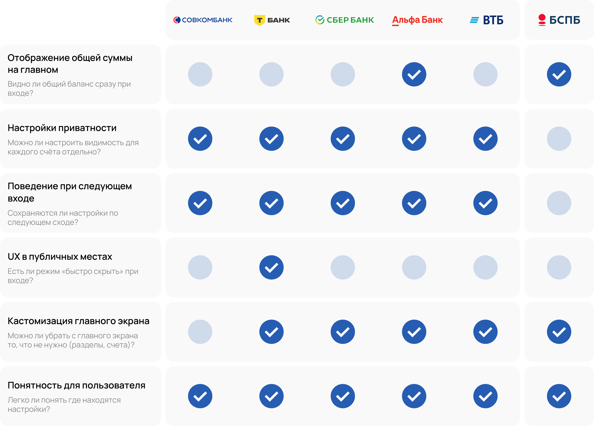
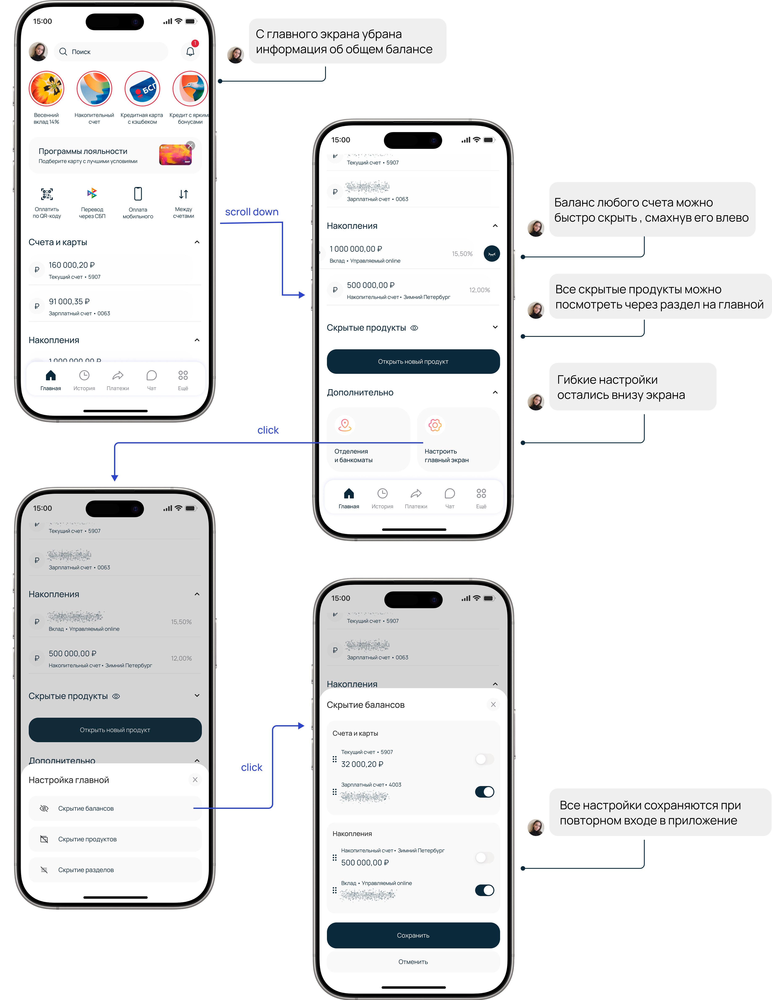

Приватность баланса Balance privacy
- КлиентClient
- Банк Санкт‑Петербург
- ФорматFormat
- Концепт-проектConcept project
- РольRole
- UX-исследование, дизайнUX research, design
- ГодYear
- 2026
Баланс виден сразу — и это проблемаThe balance shows up instantly — and that's the problem
ПроблемаProblem
При входе в приложение пользователь видит сразу совокупный баланс всех счетов и вкладов на видном месте.The moment the app opens, the user sees the combined balance of every account and deposit, front and centre.
ЗадачаTask
Изменить логику отображения балансов на главном экране: скрыть общую сумму по умолчанию и добавить гибкие настройки видимости счетов и разделов.Change how the balance shows up on the home screen: hide the total by default, and add flexible visibility settings for accounts and sections.
UX-аудит текущего интерфейсаUX audit of the current interface



Интервью с пользователямиUser interviews
Теперь вернёмся к тому, что общая сумма денег отображается сразу при входе в приложениеNow back to the fact that the total balance shows up the moment the app opens
Я провела интервью с 7 пользователями приложения, проанализировала результаты и выделила ключевые моменты. I interviewed 7 app users, analysed the results and pulled out the key points.

Почему отражение общего баланса на главной странице — это проблема?Why showing the total balance on the home screen is a problem
- Люди избегают использования приложения в общественных местахPeople avoid using the app in public places
- Пользователям редко нужна общая сумма по всем счетамUsers rarely need the total across all accounts
- Настройки скрытого глаза слетают при следующем входе в приложениеThe "hide balance" toggle resets on every new session
- Часть пользователей из-за этого «уносят» деньги в другой банк, а в этом только получают зарплатуSome users move their money to another bank because of this, keeping only a payroll account here
- Неудобно, «есть ощущение, что это свободные деньги, хотя большая часть из них лежит на вкладе»Uncomfortable: "it feels like it's free money, even though most of it is in a deposit"
Анализ отзывов пользователейAnalysis of user reviews
Я решила собрать больше информации о том, на что жалуются пользователи, и проверить, фигурирует ли эта проблема в отзывах в интернете. I decided to gather more information about what users complain about, and check whether this problem shows up in reviews online.
Совокупно я просмотрела более 100 отзывов. In total, I went through more than 100 reviews.

Отзывы подтвердили, что пользователям действительно неудобно, когда баланс всех счетов виден на главном экранеThe reviews confirmed that users are genuinely uncomfortable seeing the total balance of every account on the home screen
К чему может привести игнорирование проблемы? What could happen if this problem is ignored?
Риск потери клиентовRisk of losing clients
Если пользоваться приложением неудобно, пользователь может уйти в другой банкIf the app is uncomfortable to use, the user may switch to another bank
Снижение активности в приложенииLower app engagement
Из-за страха, что кто-то увидит баланс, люди могут реже заходить в приложение в общественных местахAfraid someone might see the balance, people may open the app less often in public places
Рост негативных отзывов в интернетеMore negative reviews online
Чтобы привлечь внимание разработчиков к проблеме, активные пользователи могут оставлять негативные отзывыTo get the developers' attention, active users may leave negative reviews
Барьер для использования продуктов банкаA barrier to using the bank's products
Люди могут открывать вклады в других банках, чтобы суммы вкладов не было видноPeople may open deposits at other banks just to keep the amounts out of sight
Как решают это 5 крупных банковHow 5 major banks solve this
Проанализировала интерфейсы Сбера, Т-банка, Альфа-Банка, ВТБ и Совкомбанка и свела результаты в единую таблицу. I analysed the interfaces of Sber, T-Bank, Alfa-Bank, VTB and Sovcombank and mapped the results into a single table.

Выводы по результатам бенчмаркинга: Takeaways from the benchmarking:
- В 4 из 6 банков не показывают совокупный баланс (общая сумма всех средств)4 of 6 banks don't show a combined balance (the total across all funds)
- 5 из 6 банков позволяют скрыть видимость баланса счетов по отдельности и сохраняют эти настройки при повторном входе5 of 6 let you hide individual account balances and keep that setting on the next visit
- Т-банк предусмотрел возможность быстро скрывать баланс при входе в приложение жестомT-Bank already lets you hide the balance instantly on login with a gesture
- Крупные игроки предусмотрели кастомизацию интерфейса и обеспечивают быстрый доступ к настройкам приватностиMajor players offer interface customisation and quick access to privacy settings
Формулирование гипотезFormulating the hypotheses
Я формулировала гипотезы на основе JTBD. I formulated the hypotheses using JTBD.
- Когда я захожу в приложение, я не хочу видеть общую сумму по всем счетам — мне нужны только те деньги, которые доступны прямо сейчас (не на вкладе), чтобы понимать, чем я реально могу распоряжаться.When I open the app, I don't want to see the total across all accounts — I only need the money that's available right now (not in a deposit), so I know what I can actually spend.
- Когда я в общественном месте и не помню, скрыт ли баланс, я хочу иметь возможность быстро скрыть все суммы, чтобы не переживать, что кто-то заглянет в экран.When I'm in public and can't remember if the balance is hidden, I want to be able to hide every amount instantly, so I don't worry about someone glancing at my screen.
- Когда я нахожусь в общественном месте, я хочу быть уверена, что никто случайно не увидит мои балансы, чтобы чувствовать себя спокойно и не привлекать внимание.When I'm in a public place, I want to be sure no one accidentally sees my balances, so I feel at ease and don't draw attention.
- Когда я один раз настроила скрытие баланса, я хочу, чтобы оно сохранялось при следующих входах, чтобы мне не приходилось каждый раз повторять одно и то же действие.Once I've set up hiding the balance, I want it to persist on the next visits, so I don't have to repeat the same action every time.
- Когда я показываю телефон другому человеку, я хочу быстро скрыть балансы некоторых счетов, чтобы он не увидел все мои деньги.When I show my phone to someone else, I want to quickly hide some account balances, so they don't see all my money.
После формулировки гипотез я перешла к проектировке решения. After formulating the hypotheses, I moved on to designing the solution.
Макеты и решениеMockups and solution
В решении я рассмотрела два контекста использования приложения: In the solution I looked at two contexts in which the app gets used:
Плановое использованиеPlanned use
пользователь настраивает приложение «под себя» один раз и пользуется в комфортной обстановкеthe user sets the app up to their liking once and uses it in a comfortable setting
Экстренная ситуацияEmergency situation
пользователь оказался в публичном месте и ему нужно мгновенно скрыть баланс всех счетовthe user is in a public place and needs to hide every balance instantly
1. Плановое использование1. Planned use
Для этого сценария я добавила постоянные настройки главного экрана, чтобы пользователь мог управлять видимостью всех элементов (счета, разделы, балансы счетов): For this scenario I added persistent home-screen settings, so the user can control the visibility of every element (accounts, sections, balances):

2. Экстренная ситуация2. Emergency situation
Через встряхивание телефона на экране ввода пин-кода пользователю дается возможность скрыть баланс на всех счетах. By shaking the phone on the PIN-entry screen, the user can hide the balance across every account.
Почему именно встряхивание?Why shake specifically?
- Это естественный жест для человека, который не хочет чтобы кто-то заглядывал в его телефон в общественном местеA natural gesture for someone who doesn't want anyone peeking at their phone in public
- Жест уже знаком пользователям (встряхивание уже используется в iOS (отмена действий), ранее «Shake to update» у Samsung)The gesture is already familiar (shake-to-undo in iOS, and Samsung's old "Shake to update")
- Технику управления жестом уже используют крупные компании (Т-Банк, Газпромбанк, Яндекс Банк)Major companies already use gesture control (T-Bank, Gazprombank, Yandex Bank)
МетрикиMetrics
Хотя этот проект реализован в рамках личного кейса и не был запущен, при его проектировании я опиралась на реальные продуктовые метрики. Although this project was built as a personal case study and never shipped, I reasoned about it using real product metrics.
Ключевые показатели, на которые может повлиять это решение: Key metrics this solution could move:
1. Retention
Повышение retention среди пользователей, которые часто пользуются приложением вне дома.Higher retention among users who often use the app away from home.
Почему:Why: Чувство безопасности в публичных местах снижает тревожность и повышает желание возвращаться в приложение.Feeling safe in public lowers anxiety and increases the desire to come back to the app.
2. CSAT и NPS
Рост активных пользователей.Growth in active users.
Почему:Why: Функция вызывает позитивную эмоциональную реакцию и благодарность к продукту при использовании в «неудобных» обстоятельствах.The feature earns a positive reaction and goodwill toward the product in "awkward" moments.
3. Частота использования3. Usage frequency
Рост частоты использования приложения в дневное и вечернее время.More frequent app use during the day and evening.
Почему:Why: Снимается барьер «проверю баланс, когда буду дома» — пользователь может сделать это сразу, не откладывая.Removes the "I'll check it at home" barrier — the user can just do it right away.